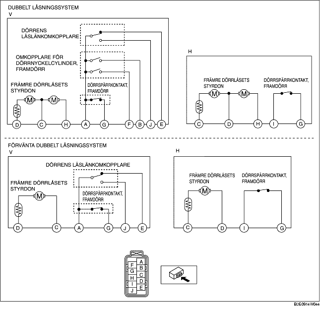

KONTROLL AV FRÄMRE DÖRRLÅSETS MEKANISM OCH STYRDON
B3E091458490W04
1. Följande styrdon och omkopplare är integrerade i främre dörrlåsets mekanism och styrdon. Kontrollera främre dörrlåsets mekanism och styrdon enligt varje kontroll av följande komponenter.
-
• Styrdon för främre dörrlåset (Se KONTROLL AV FRÄMRE DÖRRLÅSETS STYRDON.)
-
• Dörrspärrkontakt, framdörr (Se KONTROLL AV DÖRRSPÄRRKONTAKT, FRAMDÖRR.)
-
• Framdörrens låscylinderomkopplare (förarsidan) (Se KONTROLL AV OMKOPPLARE FÖR LÅSCYLINDER, FRAMDÖRR.)
-
• Dörrens låslänkomkopplare (förarsidan) (Se KONTROLL AV DÖRRENS LÅSLÄNKOMKOPPLARE.)
